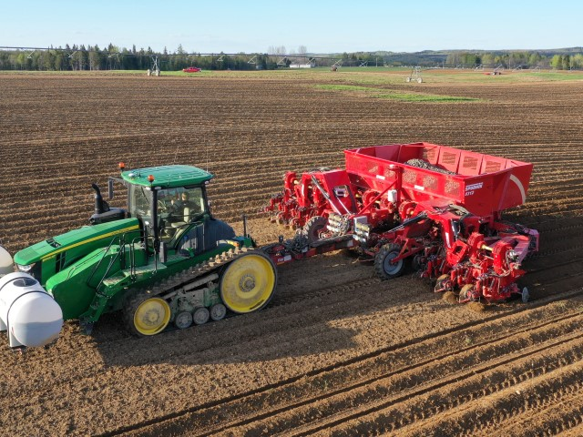

The picture on the homepage and also below, is the equipment that we use to plant our potato crop. The person running it is my cousin lane, he goes to school at The University Of Maine At Presque Isle. This planter is a very new piece of equipment to the potato world, it plants 12 rows of potatoes at a time. Before this we had 4 six row planters, in the 2019 spring we got rid of our 4 six row planters and got 2 12 row planters. We were able to plant even more acres a day with the two 12 rows then we were with four 6 rows. These planters are very revolutionary to the world of farming.
